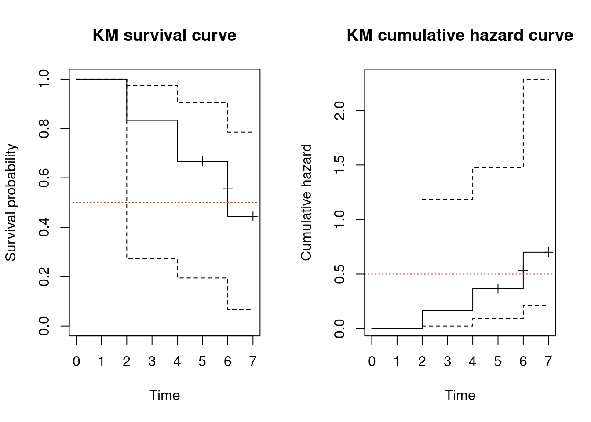

Chapter 3 Survival Analyses: Introduction
3.2 dataset
The child dataset in eha package
summary(child) # descriptive statistics## id m.id sex socBranch
## Min. : 9 Min. : 55 male :13676 official: 610
## 1st Qu.:249504 1st Qu.:248826 female:12898 farming :18641
## Median :500126 Median :504920 business: 318
## Mean :500080 Mean :501874 worker : 7005
## 3rd Qu.:750266 3rd Qu.:752827
## Max. :999976 Max. :999932
## birthdate enter exit event illeg
## Min. :1850-01-01 Min. :0 Min. : 0.003 Min. :0.0000 no :24567
## 1st Qu.:1861-01-05 1st Qu.:0 1st Qu.:15.000 1st Qu.:0.0000 yes: 2007
## Median :1870-08-08 Median :0 Median :15.000 Median :0.0000
## Mean :1869-06-09 Mean :0 Mean :12.231 Mean :0.2113
## 3rd Qu.:1878-05-08 3rd Qu.:0 3rd Qu.:15.000 3rd Qu.:0.0000
## Max. :1884-12-31 Max. :0 Max. :15.000 Max. :1.0000
## m.age cohort
## Min. :15.83 Min. :-10.000
## 1st Qu.:27.18 1st Qu.: 1.000
## Median :31.79 Median : 10.000
## Mean :32.03 Mean : 8.943
## 3rd Qu.:36.74 3rd Qu.: 18.000
## Max. :50.86 Max. : 24.000
## SurvObj.start SurvObj.stop SurvObj.status
## Min. :0 Min. : 0.003000 Min. :0.0000000
## 1st Qu.:0 1st Qu.:15.000000 1st Qu.:0.0000000
## Median :0 Median :15.000000 Median :0.0000000
## Mean :0 Mean :12.231114 Mean :0.2113344
## 3rd Qu.:0 3rd Qu.:15.000000 3rd Qu.:0.0000000
## Max. :0 Max. :15.000000 Max. :1.0000000str(child) # structure## 'data.frame': 26574 obs. of 12 variables:
## $ id : int 9 150 158 178 263 342 363 393 408 486 ...
## $ m.id : int 246606 377744 118277 715337 978617 282943 341341 840879 586140 564736 ...
## $ sex : Factor w/ 2 levels "male","female": 1 1 1 1 2 1 1 1 2 2 ...
## $ socBranch: Factor w/ 4 levels "official","farming",..: 2 2 4 2 4 2 2 2 2 2 ...
## $ birthdate: Date, format: "1853-05-23" "1853-07-19" ...
## $ enter : num 0 0 0 0 0 0 0 0 0 0 ...
## $ exit : num 15 15 15 15 0.559 0.315 15 15 15 15 ...
## $ event : num 0 0 0 0 1 1 0 0 0 0 ...
## $ illeg : Factor w/ 2 levels "no","yes": 1 1 1 1 1 1 1 1 1 2 ...
## $ m.age : num 35 30.6 29.3 41.2 42.1 ...
## $ cohort : num -7 -7 1 12 -5 -5 5 6 7 -2 ...
## $ SurvObj : 'Surv' num [1:26574, 1:3] (0,15.000+] (0,15.000+] (0,15.000+] (0,15.000+] ...
## ..- attr(*, "dimnames")=List of 2
## .. ..$ : NULL
## .. ..$ : chr [1:3] "start" "stop" "status"
## ..- attr(*, "type")= chr "counting"head(child) # preview## id m.id sex socBranch birthdate enter exit event illeg m.age
## 3 9 246606 male farming 1853-05-23 0 15.000 0 no 35.009
## 42 150 377744 male farming 1853-07-19 0 15.000 0 no 30.609
## 47 158 118277 male worker 1861-11-17 0 15.000 0 no 29.320
## 54 178 715337 male farming 1872-11-16 0 15.000 0 no 41.183
## 78 263 978617 female worker 1855-07-19 0 0.559 1 no 42.138
## 102 342 282943 male farming 1855-09-29 0 0.315 1 no 32.931
## cohort SurvObj
## 3 -7 (0,15.000+]
## 42 -7 (0,15.000+]
## 47 1 (0,15.000+]
## 54 12 (0,15.000+]
## 78 -5 (0, 0.559]
## 102 -5 (0, 0.315]3.3 Nonparametric estimation
3.3.1 Data for nonparametric models
The following code creates a set of vector for survival analysis. It contains 5 individuals’ survival time. \(1\) is an event (i.e., failure, death) and \(0\) is a cencored case.
tt <- c(7,6,6,5,2,4)
cens <- c(0,1,0,0,1,1)
Surv(tt,cens)## [1] 7+ 6 6+ 5+ 2 4aaa <- Surv(tt,cens) # demonstration only for checking how survival dataset was constructed
aaa## [1] 7+ 6 6+ 5+ 2 43.3.2 Kaplan-Meier estimator
## Models
result.km <- survfit(Surv(tt,cens)~1,
conf.type="log-log")
## Table
result.km## Call: survfit(formula = Surv(tt, cens) ~ 1, conf.type = "log-log")
##
## n events median 0.95LCL 0.95UCL
## [1,] 6 3 6 2 NAsummary(result.km)## Call: survfit(formula = Surv(tt, cens) ~ 1, conf.type = "log-log")
##
## time n.risk n.event survival std.err lower 95% CI upper 95% CI
## 2 6 1 0.833 0.152 0.2731 0.975
## 4 5 1 0.667 0.192 0.1946 0.904
## 6 3 1 0.444 0.222 0.0662 0.785## Plots
par(mfrow = c(1, 2))# Two panels, "one row, two columns".
plot(result.km,
ylab = "Survival probability",
xlab = "Time",
mark.time = T,
main="KM survival curve")
abline(h = 0.5, col = "sienna", lty = 3)
plot(result.km,
ylab = "Cumulative hazard",
xlab = "Time",
mark.time = T,
fun="cumhaz",
main="KM cumulative hazard curve")
abline(h = 0.5, col = "sienna", lty = 3)
3.3.3 Nelson-Aalen estimator
## Models
result.fh <- survfit(Surv(tt,cens)~1, conf.type="log-log", type="fh")
## Table
result.fh## Call: survfit(formula = Surv(tt, cens) ~ 1, conf.type = "log-log",
## type = "fh")
##
## n events median 0.95LCL 0.95UCL
## [1,] 6 3 6 2 NAsummary(result.fh)## Call: survfit(formula = Surv(tt, cens) ~ 1, conf.type = "log-log",
## type = "fh")
##
## time n.risk n.event survival std.err lower 95% CI upper 95% CI
## 2 6 1 0.846 0.141 0.306 0.977
## 4 5 1 0.693 0.180 0.229 0.913
## 6 3 1 0.497 0.210 0.101 0.807# Plots
par(mfrow = c(1, 2))# Two panels, "one row, two columns".
plot(result.fh,
ylab = "Survival probability",
xlab = "Time",
mark.time = T,
main="NA survival curve")
abline(h = 0.5, col = "sienna", lty = 3)
plot(result.fh,
ylab = "Cumulative hazard",
xlab = "Time",
mark.time = T,
fun="cumhaz",
main="NA cumulative hazard curve")
abline(h = 0.5, col = "sienna", lty = 3)
3.3.4 Comparisons by groups
bysex <- survfit(Surv(enter, exit, event) ~ sex,
data=child,
conf.type="log-log")
## Tables
#bysex
#summary(bysex)
summary(bysex, times=c(0, 3, 6, 9, 12, 15)) # add time points## Call: survfit(formula = Surv(enter, exit, event) ~ sex, data = child,
## conf.type = "log-log")
##
## sex=male
## time n.risk n.event survival std.err lower 95% CI upper 95% CI
## 0 13676 0 1.000 0.00000 1.000 1.000
## 3 11614 1924 0.859 0.00298 0.853 0.865
## 6 10955 555 0.818 0.00331 0.811 0.824
## 9 10653 240 0.800 0.00344 0.793 0.806
## 12 10452 146 0.789 0.00351 0.782 0.795
## 15 10269 120 0.780 0.00356 0.773 0.786
##
## sex=female
## time n.risk n.event survival std.err lower 95% CI upper 95% CI
## 0 12898 0 1.000 0.00000 1.000 1.000
## 3 11152 1611 0.875 0.00292 0.869 0.880
## 6 10578 501 0.835 0.00328 0.829 0.842
## 9 10262 242 0.816 0.00343 0.809 0.823
## 12 10079 129 0.806 0.00350 0.799 0.813
## 15 9872 148 0.794 0.00358 0.787 0.801## plots
plot(bysex,
ylab = "Survival probabilities",
xlab = "Survival time",
#mark.time = T,
main="Kaplan-Meier survival curve estimate with 95% CIs"
)
legend("topright", c("Male","Female"),
lty=c("solid","dashed"), col=c("black","red"))
3.3.5 Better KM figures
library(ggfortify)
library(ggplot2)
autoplot(bysex,
ylab = "Survival probabilities",
xlab = "Survival time",
#mark.time = T,
main="Kaplan-Meier survival curve estimate with 95% CIs"
)
3.3.6 Nonparametric models using a \(child\) dataset from eha
## Plots
par(mfrow = c(1, 2))# Two panels, "one row, two columns".
with(child, plot(Surv(enter, exit, event), fun = "cumhaz",
main = "Cumulativa hazards function",
xlab = "Duration"))
with(child, plot(Surv(enter, exit, event),
main = "Survival function",
xlab = "Duration"))
3.4 Proportional Hazards and Cox Regression
cox01 <- coxreg(Surv(enter, exit, event) ~ sex + socBranch + birthdate,
data = child)
print(summary(cox01), digits = 4)## Covariate Mean Coef Rel.Risk S.E. LR p
## sex 0.0019
## male 0.510 0 1 (reference)
## female 0.490 -0.083 0.920 0.027
## socBranch 0.0001
## official 0.021 0 1 (reference)
## farming 0.710 -0.017 0.983 0.092
## business 0.011 0.330 1.391 0.141
## worker 0.258 0.099 1.104 0.094
## birthdate 1869-07-13 -0.000 1.000 0.000 0.0000
##
## Events 5616
## Total time at risk 325030
## Max. log. likelihood -56481
## LR test statistic 67.10
## Degrees of freedom 5
## Overall p-value 4.11227e-13child$cohort <- floor(toTime(child$birthdate)) # age cohort
cox02 <- coxreg(Surv(enter, exit, event) ~ sex + socBranch + cohort,
data = child)
print(summary(cox02), digits = 4)## Covariate Mean Coef Rel.Risk S.E. LR p
## sex 0.0018
## male 0.510 0 1 (reference)
## female 0.490 -0.083 0.920 0.027
## socBranch 0.0001
## official 0.021 0 1 (reference)
## farming 0.710 -0.017 0.984 0.092
## business 0.011 0.330 1.390 0.141
## worker 0.258 0.099 1.104 0.094
## cohort 1869.035 -0.008 0.992 0.001 0.0000
##
## Events 5616
## Total time at risk 325030
## Max. log. likelihood -56481
## LR test statistic 66.79
## Degrees of freedom 5
## Overall p-value 4.75731e-13range(child$cohort)## [1] 1850 1884child$cohort <- child$cohort - 1860
cox03 <- coxreg(Surv(enter, exit, event) ~ sex + socBranch + cohort,
data = child)
# Table
summary(cox03)## Covariate Mean Coef Rel.Risk S.E. LR p
## sex 0.002
## male 0.510 0 1 (reference)
## female 0.490 -0.083 0.920 0.027
## socBranch 0.000
## official 0.021 0 1 (reference)
## farming 0.710 -0.017 0.984 0.092
## business 0.011 0.330 1.390 0.141
## worker 0.258 0.099 1.104 0.094
## cohort 9.035 -0.008 0.992 0.001 0.000
##
## Events 5616
## Total time at risk 325030
## Max. log. likelihood -56481
## LR test statistic 66.79
## Degrees of freedom 5
## Overall p-value 4.75731e-13# Plots
par(mfrow = c(1, 2), las = 1)
plot(cox03,
fn = "cum", main = "",
#xlab="Duration (year)",
ylab="hazard",
#xlim=c(0, 1)
#ylim=c(ymin, ymax)
)
plot(cox03,
fn = "sur", main = "",
#xlab="Duration (year)",
ylab="hazard",
#xlim=c(0, 1)
#ylim=c(ymin, ymax)
)
3.4.1 A visual check for a proportionality assumption
library(survival)
## Create survival vector for fish dataset
child$SurvObj <- with(child, Surv(enter, exit, event))
par(mfrow = c(1, 2), las = 1)
plot(survfit(SurvObj ~ sex, data=child),
main = "Proportional hazard by sex",
ylab = "Survival",
col=c("black", "red")
)
plot(survfit(SurvObj ~ sex, data=child),
fun = "cloglog",
ylab = "Log-log survival",
main = "Proportional hazard by sex",
col=c("black", "red")
)library(survival)
## Create survival vector for fish dataset
child$SurvObj <- with(child, Surv(enter, exit, event))
par(mfrow = c(1, 2), las = 1)
plot(survfit(SurvObj ~ socBranch, data=child),
main = "Proportional hazard by sex",
ylab = "Survival",
col=c("black", "red", "green", "blue")
)
plot(survfit(SurvObj ~ socBranch, data=child),
fun = "cloglog",
ylab = "Log-log survival",
main = "Proportional hazard by sex",
col=c("black", "red", "green", "blue")
)
3.5 Parametric estimation
3.5.1 Weibull model
# Models
parm_weib <- phreg(Surv(enter, exit, event) ~ sex + socBranch + cohort ,
dist = "weibull",
data = child)
# Table
#print(summary(parm), digits = 4)
parm_weib## Call:
## phreg(formula = Surv(enter, exit, event) ~ sex + socBranch +
## cohort, data = child, dist = "weibull")
##
## Covariate W.mean Coef Exp(Coef) se(Coef) Wald p
## sex
## male 0.510 0 1 (reference)
## female 0.490 -0.083 0.920 0.027 0.002
## socBranch
## official 0.021 0 1 (reference)
## farming 0.710 -0.026 0.975 0.092 0.780
## business 0.011 0.332 1.393 0.141 0.019
## worker 0.258 0.092 1.097 0.094 0.329
## cohort 9.035 -0.008 0.992 0.001 0.000
##
## log(scale) 5.887 0.228 0.000
## log(shape) -0.880 0.013 0.000
##
## Events 5616
## Total time at risk 325030
## Max. log. likelihood -25131
## LR test statistic 68.69
## Degrees of freedom 5
## Overall p-value 1.91736e-13# Plots
par(mfrow = c(1, 2), las = 1)
plot(parm_weib,
fn = "cum", main = "",
#xlab="Duration (year)",
ylab="hazard",
#xlim=c(0, 1)
#ylim=c(ymin, ymax)
)
plot(parm_weib,
fn = "sur", main = "",
#xlab="Duration (year)",
ylab="Survival",
#xlim=c(0, 1)
#ylim=c(ymin, ymax)
)
3.5.2 Gompertz model
# Models
parm_gomp <- phreg(Surv(enter, exit, event) ~ sex + socBranch + cohort ,
dist = "gompertz",
data = child)
# Table
#print(summary(parm), digits = 4)
parm_gomp## Call:
## phreg(formula = Surv(enter, exit, event) ~ sex + socBranch +
## cohort, data = child, dist = "gompertz")
##
## Covariate W.mean Coef Exp(Coef) se(Coef) Wald p
## sex
## male 0.510 0 1 (reference)
## female 0.490 -0.087 0.916 NA NA
## socBranch
## official 0.021 0 1 (reference)
## farming 0.710 -0.064 0.938 NA NA
## business 0.011 0.349 1.417 NA NA
## worker 0.258 0.066 1.068 NA NA
## cohort 9.035 -0.008 0.992 NA NA
##
## log(scale) 401.049 NA NA
## log(shape) 397.124 NA NA
##
## Events 5616
## Total time at risk 325030
## Max. log. likelihood -28368
## LR test statistic 78.89
## Degrees of freedom 5
## Overall p-value 1.44329e-15# Plots
par(mfrow = c(1, 2), las = 1)
plot(parm_gomp,
fn = "cum", main = "",
#xlab="Duration (year)",
ylab="hazard",
#xlim=c(0, 1)
#ylim=c(ymin, ymax)
)
plot(parm_gomp,
fn = "sur", main = "",
#xlab="Duration (year)",
ylab="Survival",
#xlim=c(0, 1)
#ylim=c(ymin, ymax)
)